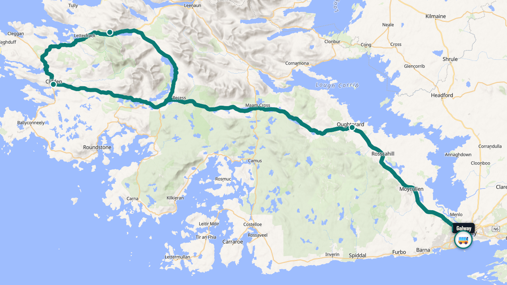
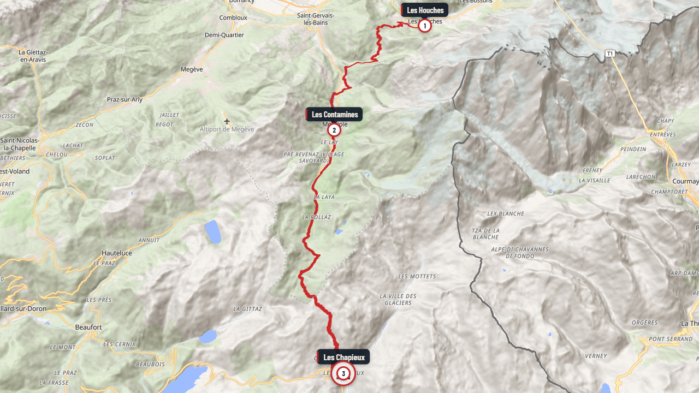
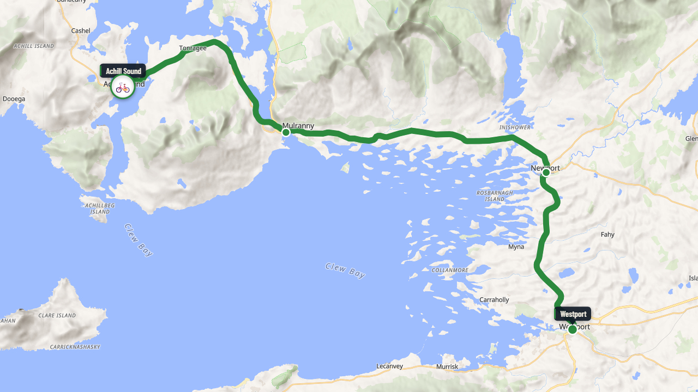
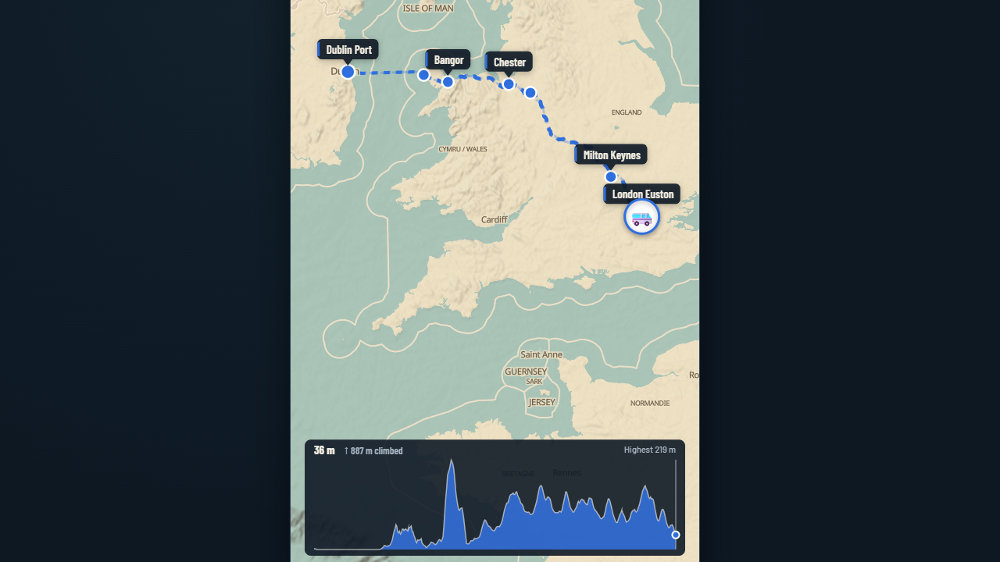
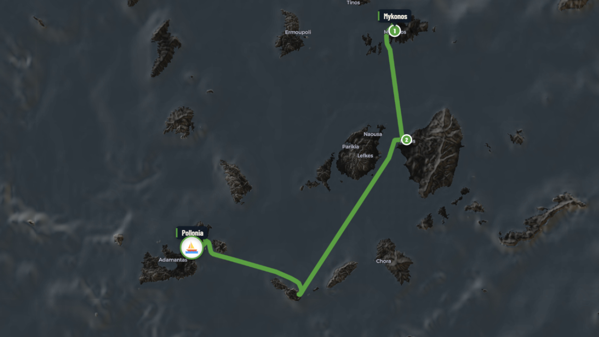
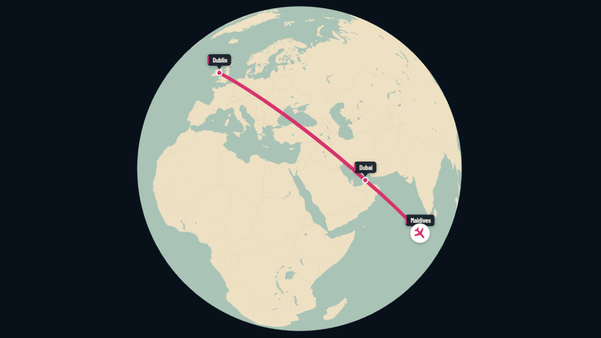

0:30Connemara Day Tour
Galway to Clifden and Kylemore Abbey and back, on one coach day out.
Animated route maps for travel brands
We turn your tours into short animated map videos. The route draws itself along real roads, walking trails, ferry crossings and mountain passes, with your stops, your logo and your colours. Ready for your tour pages, Instagram, YouTube and email.
16:9 · 9:16 · 1:1 · up to 4KFirst draft in 5 working days
Showcase
Five journeys, each made for a different kind of travel business, in its own brand and in every shape. Find the one closest to yours.
01 · Coach & escorted tours
Every overnight town and highlight on the real highways, with a card for each day in your own words. It sits beside the itinerary on your tour page, and the vertical cut goes to social media.
One route, every shape
Demo brand: Tamarack & Pine Coachways (made up for this showcase)
02 · Walking & cycling holidays
From your GPX files or the itinerary. The elevation profile fills as the walker moves, and each overnight town gets its card.
Demo brand: Slow Roads Camino (made up)
03 · Cycling events & rides
Riders share them, sponsors get seen, and each day’s towns and roads are clear before anyone clips in.
The route video · 16:9
Demo: the Lakeshore 330, a made-up ride
04 · Cruises, ferries & islands
Sea days and ports of call on one map, with a card for each port. Made for a voyage page, an email or a travel show.
Ports and passages
Demo brand: Northwater Small Ship Cruises (made up)
05 · Rail & custom itineraries
Rail, flights, ferries and roads: whatever your clients travel on, the map follows it, in a look as polished as the trip.
Demo brand: Alpine Line Rail Journeys (made up)
The brands in these examples are made up. Your sample comes in your own.

0:30Galway to Clifden and Kylemore Abbey and back, on one coach day out.

0:23The real trail from Les Houches to Les Chapieux, in 3D with the climb.

0:27Westport to Achill on the old railway line: 42 km by bike.

0:20The ferry to Holyhead, then the bus to London Euston. Made for Reels.

0:23Mykonos to Naxos to Santorini by ferry, on a night-time map.

0:16A honeymoon in two flights, via Dubai.
Click any journey to watch it full size. Want to see one of your own tours? Ask for a free sample.
Routes follow the actual roads, or the walking or cycling trail itself, from your GPX file.
When the journey crosses water or goes through a tunnel, the car becomes a ferry or a train by itself.
Shaded relief, contour lines and a live elevation profile, so walkers and cyclists see the climb.
Your logo, colours, font and icons, saved as your house style so every video matches.
Long tours split into days or regions, with smooth fly-overs or push transitions between them.
Widescreen, vertical and square versions, up to 4K, plus a still poster image for brochures and email.
How it works
A GPX or Ride with GPS file, a link to the tour page, or just a list of stops, with your logo and deadline.
A first version within 5 working days, on the real roads and trails, in your colours.
Ask for changes to timing, labels, colours or the camera. One round is included.
MP4s in widescreen, vertical and square, up to 4K, ready to post anywhere.
Send the new file and we remake the videos it affects, at half price.
Each order comes in the shapes you need, so the same journey works at the top of a tour page, in a Reel and in a newsletter.
Pricing
You pay per video. Every video comes in widescreen, vertical and square, up to 4K, in your logo and colours.
$179per route video
$159per video
$139per video
| Short clip: one day or one leg, up to 20 seconds |
|
|---|---|
| Extra stops, over 12 on a route | +$19 per stop |
| Longer than 90 seconds | +$69 per extra minute |
| Clean version, without the small Iterra Maps mark | +$29 per video |
| Route changed after delivery | Half the video’s price to remake it |
Prices in US dollars. You can use the videos in your own marketing on any channel.
Paste a link to any tour on your site and we’ll send back a 15-second animated sample. No cost, no obligation.
Just the route: a GPX or Ride with GPS file, a link, a PDF or a list of stops. For walking and cycling, a route file gives the most exact line; for waymarked trails we can usually find the official route ourselves. Send your logo (ideally a transparent PNG or an SVG), your brand colours and your deadline. If you’d like a photo on each stop’s card, send one per stop that you own or have the rights to use.
A first version within 5 working days of receiving the route, for up to five videos. For bigger orders we agree a schedule with you. Need it sooner? Ask, and we’ll tell you honestly whether we can.
Yes. Route colours, map style, font, panel colours, your logo and your own vehicle icons can all be set to match, and they’re saved as your house style for every future video.
You can use them in your own marketing, on any channel, for as long as you like. The map data credit (© OpenStreetMap contributors) stays in the corner, as the map licence requires.
Videos are delivered silent, so they autoplay anywhere, including on your website. You can add your own track if you want one.
Send the new file. Your route and style are saved, so we remake the videos it affects at half their price.
Each video carries a small, semi-transparent Iterra Maps mark in one corner. If you’d rather have it without, a clean version is $29 per video.